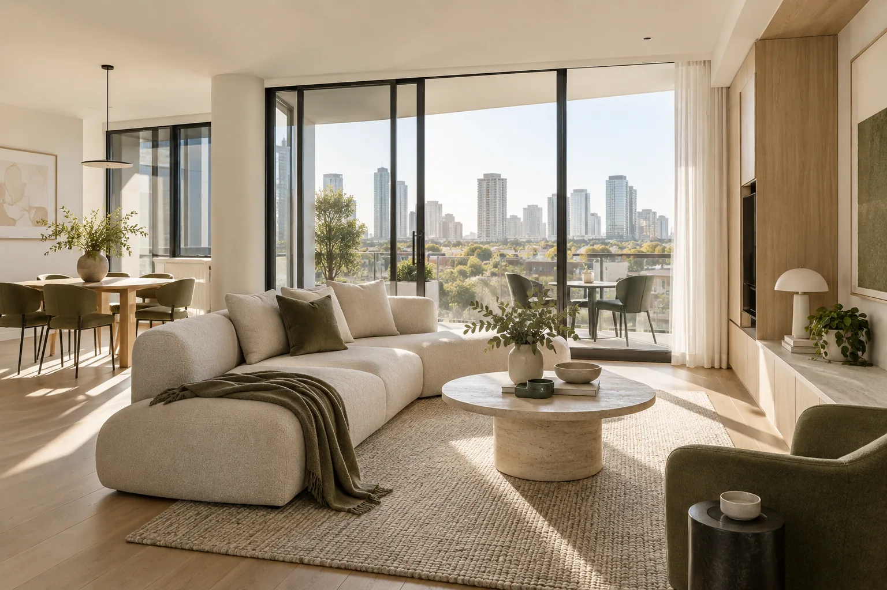
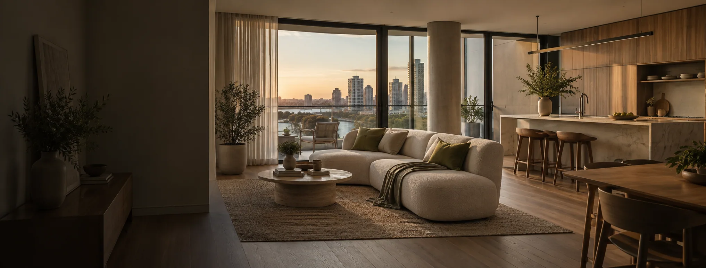
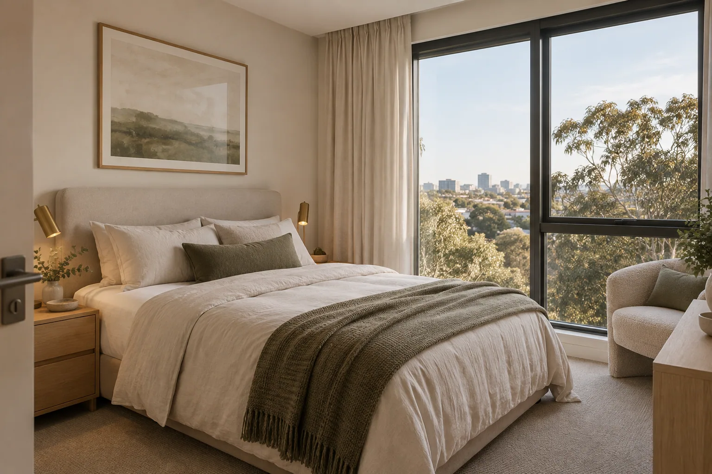

Pyrmont, Sydney

Stay with us
Comfortable spaces, professionally prepared and thoughtfully supported.
Our Bases
Discover our first Sydney listing alongside concept stays. Explore the client-provided photographs of 151 Harris St, Pyrmont.
Pyrmont, Sydney

Sample onlyNewstead · Brisbane
Sample listing. Not available for booking.
View Base →
Sample onlyRichmond · Melbourne
Sample listing. Not available for booking.
View Base →Sydney CBD · Sydney
Sample listing. Not available for booking.
View Base →151 Harris St, Pyrmont features client-provided photographs. Other listings and images remain concept content.
Need more time?
Relocating, working on a project or simply staying awhile?